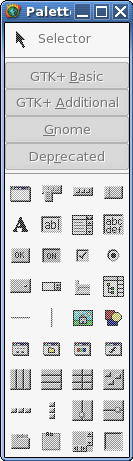
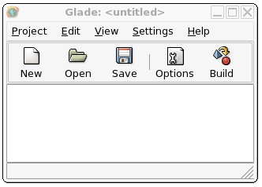

Glade# for Rapid Development: Hello World
Contents
In the previous chapter, you learned how create a GUI the hard way,
with code alone. In this chapter, we'll look at using the Glade GUI
builder. Glade lets you construct a user interface visually, and keep
it neatly separated from the rest of the code.
Glade comes in two pieces:
- The Glade application itself, which lets you build the UI and saves it as an XML file.
- The libglade library, which loads the XML and generates the UI at runtime.
If you install the packages glade, libglade, and gtk-sharp, you
will have all you need: gtk-sharp includes the .NET wrappers for
libglade. You can use Glade and libglade with a variety of
languages, including Python, C, C++, and of course C#. Check the
Glade documentation for details.
If you build an application using libglade, libglade must be
installed for the application to run, and you must include the XML
application file with your application. If you are using Gtk#, you
can bundle the XML file as part of the executable.
|  |
First, open the Glade Interface Designer (make sure you're
using version 2.0 or newer, usually run with the command
glade-2). Glade opens with three windows: the main window, a
properties window, and a palette window. In the main window,
click the New button, and when prompted select GNOME
Project.
Note: Glade 2.5 and later make use of Gtk+ 2.4, which
offers a wider range of widgets than Gtk+ 2.2. Prior to Mono 1.0,
GNOME.NET (including gtk-sharp) will support only Gtk+ 2.2
widgets. Although you can use any version of Glade after 2.0 to
design your interface, versions between 2.0 and 2.5 are suggested,
to avoid accidental selection of unsupported widgets.
Now, select your first widget from the palette: a window. All other
widgets go inside a window. As you might expect for the first item
in every project, the window button is the first button in the
palette. When you click the window button, a new window opens,
labeled window1. The Properties dialog now shows information
about the window, including Type, Position, and Caption.
The next step is adding signals, so that your window will have an
action. In the properties dialog, select the Signals
tab. Then, click the ... next to the signal entry box to
display a list of predefined signals available to you. Select
"delete_event," one of the GtkWidget signals. Leave it with the
default name, "on_window1_delete_event". You can use this signal to
quit your application when the window closes.
Next, add a button to your window: click the button tool in the
palette (it's in the left column, with an "OK" on it) and
then click in your new window. Because you have not placed anything
else in the window, the button will fill all the available space.
Note: In Glade, there are four categories of widget: Gtk+
Basic, Gtk+ Additional, GNOME, and Deprecated. The first two are
easily portable to Windows and Macintosh OS X. If you are developing
for Linux only, you may find the items in the GNOME category to be
useful, in particular the "Druid" or assistant object, the font
selector, and icon lists. The Deprecated tools, obviously, are not
recommended.
Just like the window, the button needs a signal before it can do
anything. In the properties window, click Signals.
properties and add a signal handler for the GtkButton signal
"clicked," leaving it with the default name, "on_button1_clicked".
Now, save your project in a new directory, naming it "button."
Glade will create two files for you: button.glade, which describes
your window and button, and button.gladep, which is a Glade project file
we don't need to work with right now. The button.glade file should
look like this:
|


|
<?xml version="1.0" standalone="no"?> <!--*- mode: xml -*-->
<!DOCTYPE glade-interface SYSTEM "http://glade.gnome.org/glade-2.0.dtd">
<glade-interface>
<widget class="GtkWindow" id="window1">
<property name="visible">True</property>
<property name="title" translatable="yes">window1</property>
<property name="type">GTK_WINDOW_TOPLEVEL</property>
<property name="window_position">GTK_WIN_POS_NONE</property>
<property name="modal">False</property>
<property name="resizable">True</property>
<property name="destroy_with_parent">False</property>
<signal name="delete_event" handler="on_window1_delete_event" last_modification_time="Mon, 05 Apr 2004 13:31:33 GMT" />
<child>
<widget class="GtkButton" id="button1">
<property name="border_width">10</property>
<property name="visible">True</property>
<property name="can_focus">True</property>
<property name="label" translatable="yes">button1</property>
<property name="use_underline">True</property>
<property name="relief">GTK_RELIEF_NORMAL</property>
<signal name="clicked" handler="on_button1_clicked_event" last_modification_time="Mon, 05 Apr 2004 13:31:57 GMT" />
</widget>
</child>
</widget>
</glade-interface>
The code we will use in this example is similiar to the code from
previous chapters. However, most of the action has moved from the
Main() method to the GladeTest constructor, because Main() is now
static and therefore does not belong to any class. Using the
GladeTest() method makes things simpler and neater. There are three
other portions of code you should pay special attention to.
-
As in other examples, we define namespaces and assemblies first.
In this example, the namespace is "GladeSamples" and
we're using System, Gtk and Glade. The addition of Glade
here allows us use of the Glade# assembly.
-
Next, look at the first two lines in the Application.Init() function,
which will hook our Glade XML file to our code. In the first line, we
create an instance of a Glade.XML object. The constructor is provided
with the file name (button.glade) and the primary widget we'll be
working with (window1). (The third parameter is for the XML
translation domain. It defaults to null and we can ignore it for now).
Glade.XML gxml = new Glade.XML ("button.glade", "window1", null);
With that line, the user interface we created earlier is now
accessible to our application as the object named 'gxml.'
Now we'll call the Autoconnect() method in our user interface object:
gxml.Autoconnect (this);
-
Finally, note that importing the Glade file didn't import every
object in it: you need to import them individually:
[Glade.Widget]
Button button1;
Once you've done that, you can interact with the object, adding more
properties and events that aren't defined in the Glade file. Here,
we set the width of the button border to ten pixels:
button1.BorderWidth=10;
Here's the full example:
namespace GladeSamples {
using System;
using Gtk;
using Glade;
public class GladeTest
{
public static void Main (string[] args)
{
new GladeTest(args);
}
/* The following two lines "import" the Glade objects, allowing
* us to work with the signal handlers we created earlier.
* If you do not import your objects this way, you must write
* your own signal handling code. */
[Glade.Widget]
Button button1;
public GladeTest (string[] args)
{
Application.Init();
/* The next lines load the glade file button.glade
* (in the current directory), select window1 and
* connect it to the current object, an instance
* of GladeTest. */
Glade.XML gxml = new Glade.XML ("button.glade", "window1", null);
gxml.Autoconnect (this);
button1.BorderWidth=10;
Application.Run();
}
/* The following two methods implement the signal handling code
* defined in the UI designer*/
public void on_window1_delete_event (object o, DeleteEventArgs args)
{
Application.Quit ();
args.RetVal = true;
}
public void on_button1_clicked (System.Object obj, EventArgs e)
{
Console.WriteLine ("Button 1 clicked");
}
}
}
Save the file as GladeTest.cs, and compile it:
mcs -unsafe -pkg:gtk-sharp,glade-sharp GladeTest.cs
Then, run it:
mono GladeTest.exe
You should get this:

Our earlier application consisted of a single EXE file, but now we
have an additional file to distribute: the button.glade XML
file. Fortunately, we can embed button.glade directly into our
executable.
To do that, we'll use a different constructor when creating the gxml
object. This constructor uses four parameters, the first of which is
the System.Reflection.Assembly object that we want to contain our file.
Glade.XML gxml = new Glade.XML (null, "button.glade", "window1", null);
gxml.Autoconnect (this);
The null value there forces the application to look in the current
assembly to find the file, instead of looking for it in the actual
filesystem. Then, we use the resource flag on the compiler to
compile the button.glade file into the executable:
mcs -unsafe -resource:button.glade -pkg:gtk-sharp,glade-sharp GladeTest.cs